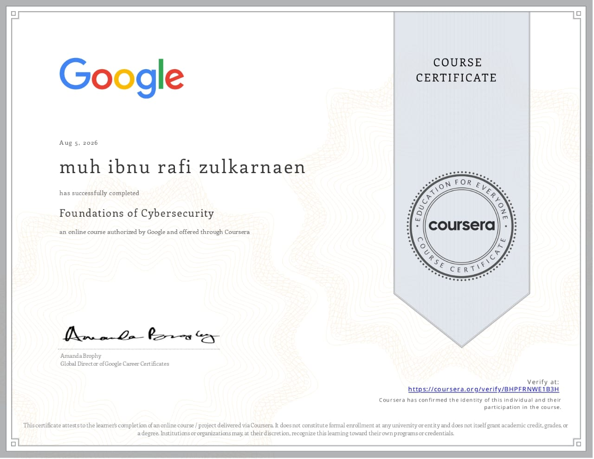
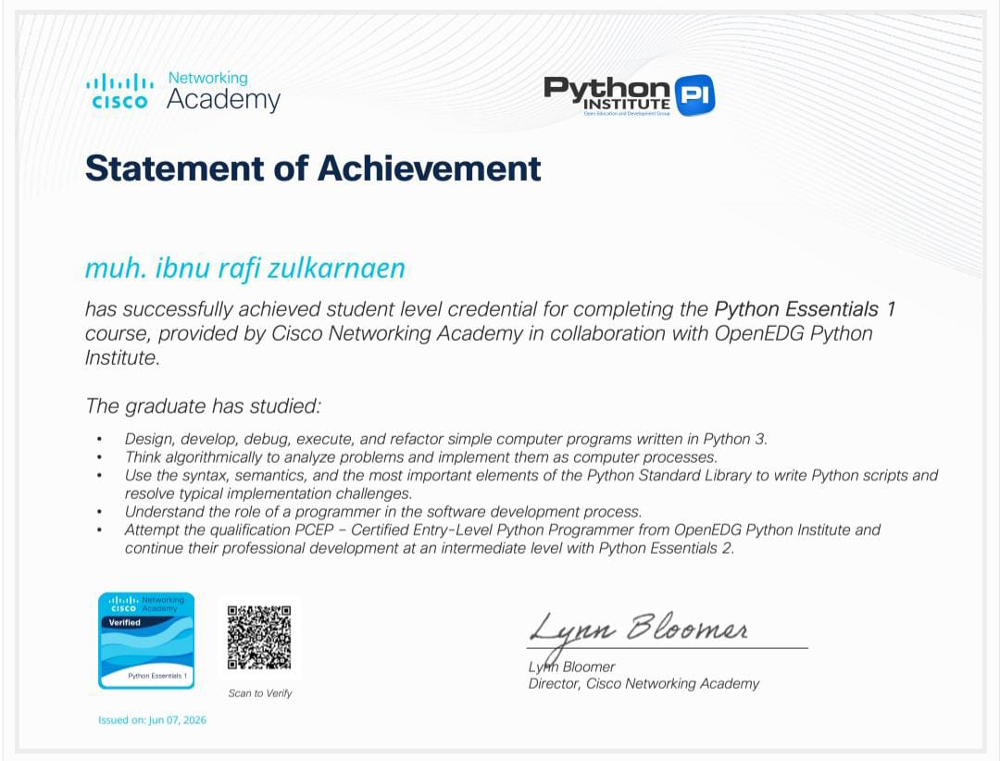
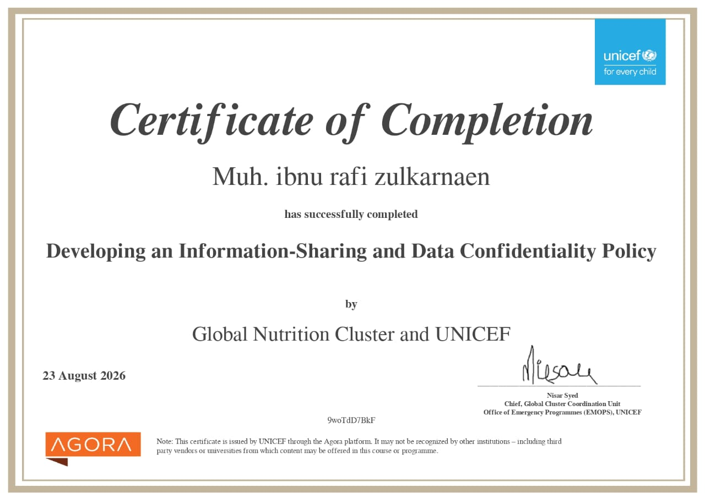

Visi
Menjadi praktisi teknologi yang mampu membangun sistem digital yang tidak hanya fungsional dan estetis, tapi juga tangguh terhadap ancaman keamanan sejak dari rancangannya.
wel to website
Cyber Security.
Saya seorang mahasiswa Informatika yang bergerak di dua dunia: pengembangan front-end yang rapi dan terstruktur, serta eksplorasi keamanan siber yang penuh rasa ingin tahu. Portofolio ini adalah tempat kedua sisi itu bertemu.
Ketertarikan saya bermula dari rasa penasaran sederhana: bagaimana sebuah sistem bisa dipercaya, dan bagaimana ia bisa dibobol. Dari situ saya belajar membangun sekaligus menguji — merancang antarmuka yang nyaman digunakan, lalu mencari celah yang membuatnya rapuh. Dua kebiasaan itu saling melengkapi setiap proyek yang saya kerjakan.
Menjadi praktisi teknologi yang mampu membangun sistem digital yang tidak hanya fungsional dan estetis, tapi juga tangguh terhadap ancaman keamanan sejak dari rancangannya.
Rasa ingin tahu yang bertanggung jawab. Setiap kemampuan untuk "membongkar" sesuatu saya imbangi dengan komitmen untuk memahaminya demi membangun yang lebih baik.

Google Coursera 2026

Python Essentials 2026
Huawei ICT Academy 2026

UNICEFF GLOBAL NUTRITION CLUSTER 2026